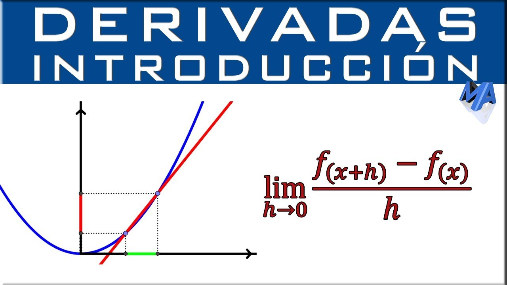
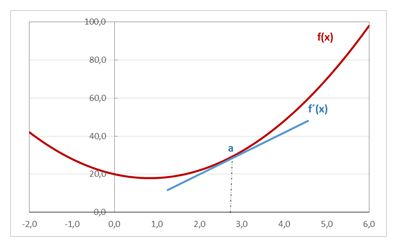
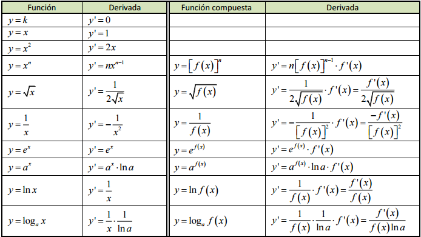
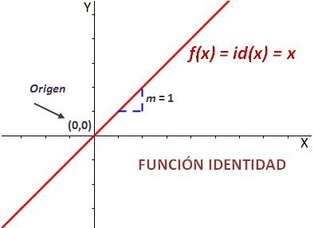
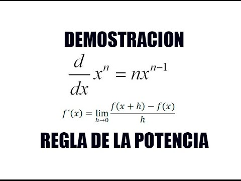
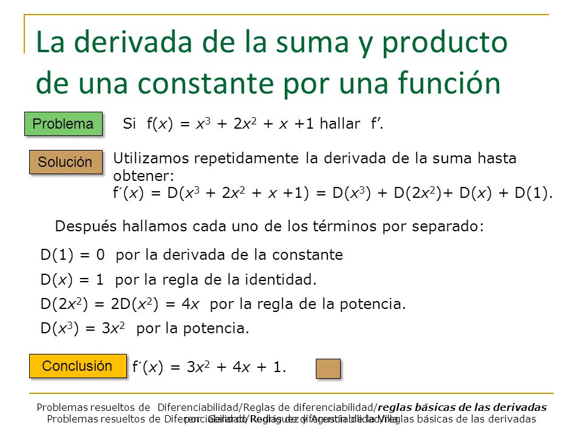
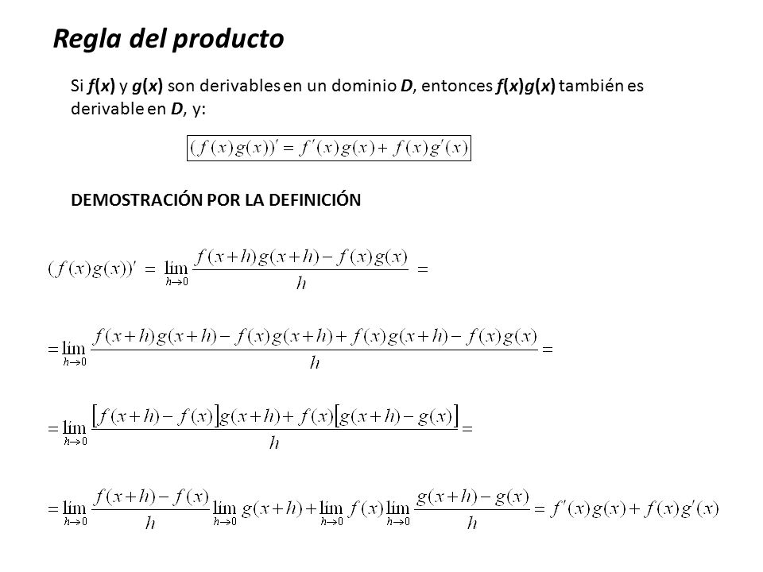
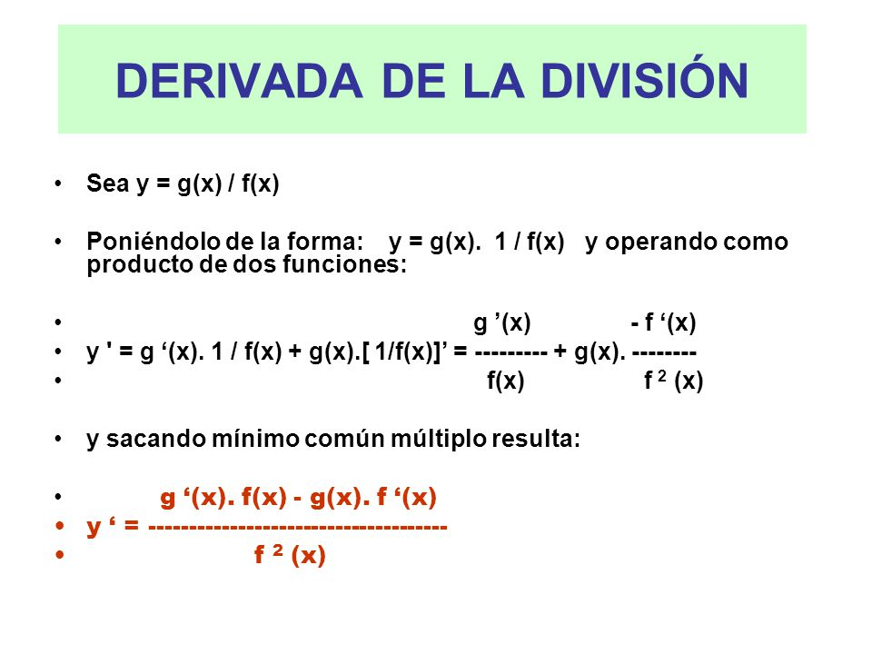
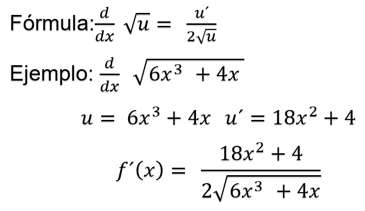
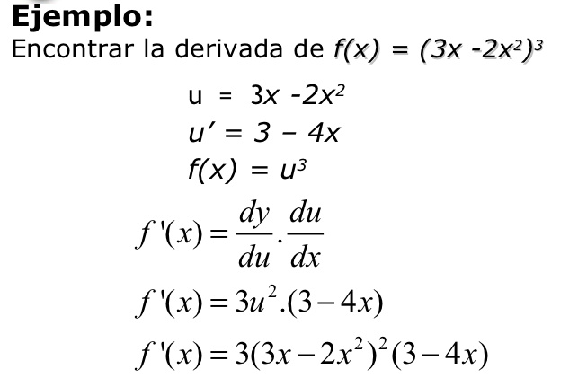

Definición
El concepto de derivada de una función matemática se halla íntimamente relacionado con la noción de límite. Así, la derivada se entiende como la variación que experimenta la función de forma instantánea, es decir, entre cada dos puntos de su dominio suficientemente próximos entre sí. La idea de instantaneidad que transmite la derivada posee múltiples aplicaciones en la descripción de los fenómenos científicos, tanto naturales como sociales.

Variación de una función
Dada una función f (x), se define variación de la función entre dos puntos de su dominio x1 y x2, siendo x1 < x2, a la diferencia f (x2) - f (x1). Cuando esta diferencia es positiva, la función es creciente en el punto; si es negativa, la función es decreciente.
4.2 Reglas básicas de derivación
El cálculo de la derivada de una función puede realizarse a partir de un conjunto de reglas fijas de aplicación sistemática. A la hora de derivar una función, se utilizan primero las propiedades generales de la derivación, para reducirla a una serie de funciones simples conocidas, cuyas derivadas se obtienen directamente a partir de una tabla.

4.2.1 Regla de la función constante
La función constante es aquella función que toma el mismo valor de f(x) para cualquier valor de x. En otras palabras, sin importar el valor que toma x, f(x) siempre vale lo mismo.
La función constante siempre tiene la forma:
f (x) = k
Algunos ejemplos de función constante:
f (x) = +2 y = -3

4.2.2 Regla de la función identidad
identidad es una función lineal de pendiente m = 1 que pasa por el origen de coordenadas, es decir, por el punto (0,0). Divide el primer y el tercer cuadrante en partes iguales, o sea, es su bisectriz.
La pendiente es la inclinación con respecto al eje X (eje de abscisas). Al ser ésta positiva (m > 0), la función es creciente.
Que la pendiente de la función identidad sea m = 1 significa que, si aumentamos la x en una unidad, la y también aumenta en una unidad.

4.2.3 Regla de las potencias
La derivada de una potencia o función potencial, es igual al exponente por la base elevada al exponente menos uno y por la derivada de la base.
f ( x ) = uk f ' ( x ) = k . u k-1 . u'
Si la base es la función identidad, la derivada es igual al exponente por la base elevada al exponente menos uno.
f (x) = xk f' (x) = k · xk−1

4.2.4 Regla de una constante por una función
La derivada del producto de una constante por una función es igual al producto de la constante por la derivada de la función.
f ( x ) = k . u f ' ( x ) = k . u '

4.2.5 Regla para la suma y diferencia de funciones
La función suma f + g es una función que asigna a cada número real “x” la suma de las cantidades por la función f y por la función g
( f + g ) ( x ) = f ( x ) + g ( x )
Diferencia
La función diferencia f - g es una función que asigna a cada número real “x” la diferencia de las cantidades por la función f y por la función g
( f – g ) ( x ) = f ( x ) – g ( x )

4.2.6 Regla del producto
La función producto f . g es una función que asigna a cada número real “x” es producto de las cantidades por la función f y por la función g
( f . g ) ( x ) = f ( x ) . g ( x )

4.2.7 Regla de la división
La función es igual a la derivada del numerador por el denominador menos la derivada del denominador por el numerador, divididas por el cuadrado del denominador
f ( x )=u/v f ' ( x )(u^'.v -u .v )/v^2

4.2.8 Regla de la función de la raíz cuadrada
La derivada de la raíz de una función es igual a la derivada del radicando partida por la “n” veces la raíz enésima de la función radicando elevada a “n” menos uno

4.2.9 Regla de la cadena
Es una formula para derivar la composición de dos funciones, de la siguiente manera

Atras